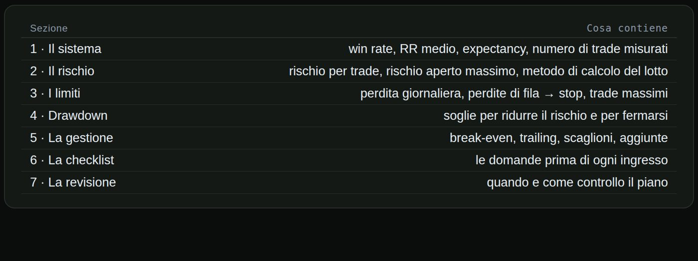
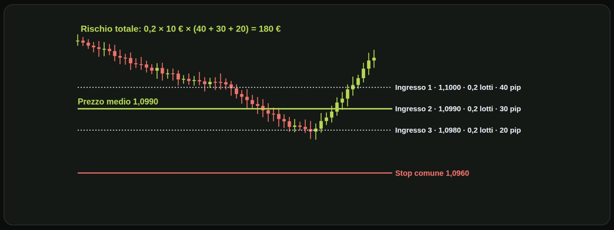
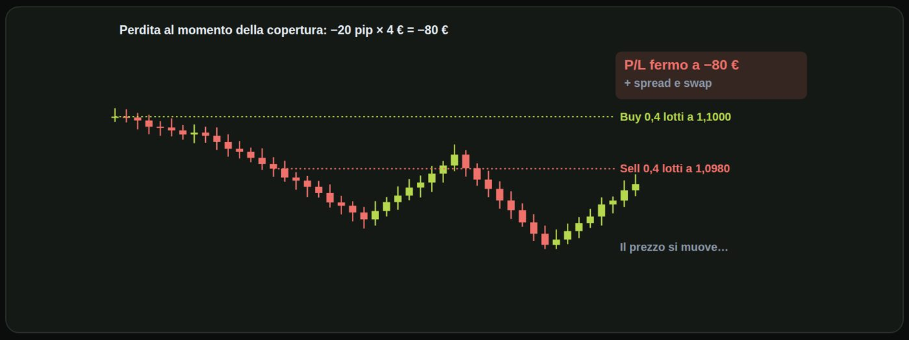

Materiale educativo, non consulenza finanziaria. Il trading con leva su forex, CFD e futures comporta un rischio elevato: puoi perdere tutto il capitale. Numeri, esempi e simulazioni non prevedono risultati futuri.
Far lavorare i guadagni sui guadagni, e capire quando lavora contro di te.
Il compounding è l'interesse composto applicato al trading. Ogni guadagno entra nel capitale, e l'operazione successiva si calcola sul capitale più grande. Per questo la crescita accelera nel tempo: non è una linea retta, è una curva. E se rischi una percentuale fissa del capitale corrente, come abbiamo visto nel modulo quattro, il compounding funziona da solo: l'uno per cento di un conto più grande sono più euro.

Ecco la differenza su un conto di diecimila euro. La linea tratteggiata guadagna duecento euro fissi al mese: dopo tre anni arriva a diciassettemiladuecento. La linea verde guadagna il due per cento al mese sul capitale corrente: dopo dodici mesi è a dodicimilaseicentottantadue, dopo ventiquattro a sedicimilaottantaquattro, dopo trentasei a oltre ventimila. Stesso punto di partenza, stesso due per cento iniziale: la differenza la fa il tempo.
| Mesi | Lineare (+200 €/mese) | Composto (+2%/mese) | Differenza |
|---|---|---|---|
| 12 | 12.400 € | 12.682 € | +282 € |
| 24 | 14.800 € | 16.084 € | +1.284 € |
| 36 | 17.200 € | 20.399 € | +3.199 € |
Formula: capitale × (1 + r)ⁿ
| 10.000 → 11.000 | |
| 11.000 → 9.900 | |
| Risultato | −1% |
| 10.000 → 12.000 | |
| 12.000 → 9.600 | |
| Risultato | −4% |
Attenzione: il compounding funziona anche al contrario. Guadagni il dieci per cento e poi perdi il dieci: da diecimila a undicimila, poi a novemilanovecento. Sei sotto dell'uno per cento. Guadagni il venti e perdi il venti: da diecimila a dodicimila, poi a novemilaseicento. Sei sotto del quattro per cento. Più il conto oscilla, più l'interesse composto lavora contro di te. Ecco perché un rendimento stabile cresce più di uno identico in media ma molto altalenante.
I benefici e come proteggerli. La crescita accelera senza che tu aumenti il rischio in percentuale. Nelle perdite le posizioni si riducono da sole: il compounding frena anche la discesa. Proteggilo dalle oscillazioni: drawdown bassi significano una curva composta più alta. E decidi in anticipo quanto prelevi. Ogni prelievo rallenta la curva: è una scelta legittima, ma va fatta a mente fredda.
Il compounding non premia chi corre. Premia chi resta in gioco.
Cinque modi di far seguire lo stop al prezzo, con pregi e difetti.
Nella lezione otto punto uno abbiamo visto il trailing a scatti. Qui li vediamo tutti. Perché usarlo? Blocca una parte del guadagno mentre il trade corre, senza dover indovinare il massimo. Lascia correre i trade migliori: non c'è un target fisso che ti fa uscire troppo presto. E toglie la decisione a caldo: è la regola a spostare lo stop, non l'emozione.
| Tipo | Come funziona | Esempio |
|---|---|---|
| A distanza fissa | lo stop resta X pip sotto il massimo | 20 pip sotto il massimo |
| A scatti | lo stop sale a gradini | +25 pip → pareggio, +50 → +25 |
| Strutturale | lo stop va sotto l'ultimo minimo | sotto ogni nuovo minimo crescente |
| Con ATR | distanza = k × ATR | 2 × ATR(14) |
| Temporale | esci se non succede nulla | dopo 4 ore senza movimento |
| Ingresso | 1,1000 · stop iniziale 1,0975 |
| Il prezzo sale a 1,1030 | stop a 1,1010 (+10 pip) |
| Il prezzo sale a 1,1060 | stop a 1,1040 (+40 pip) |
| Il prezzo torna a 1,1040 | esci a +40 pip |
| Tipo | Pregio | Difetto |
|---|---|---|
| Distanza fissa | semplice | ignora la volatilità |
| A scatti | protegge per gradi | lascia indietro pip tra uno scatto e l'altro |
| Strutturale | segue il mercato | serve leggere il grafico |
| Con ATR | si adatta alla volatilità | più largo nei mercati nervosi |
| Temporale | libera capitale e attenzione | può chiudere un trade appena prima del movimento |
Gli errori più comuni. Un trailing troppo stretto: esci al primo ritracciamento normale. Cambiare tipo di trailing durante il trade: è una decisione a caldo travestita da regola. E non misurarne l'effetto: confronta nel journal i pip medi con e senza trailing, su almeno cento operazioni.
Il trailing non cerca il massimo. Cerca di non restituire tutto.
Dividere l'ingresso su più livelli, con il rischio calcolato prima.
L'idea è semplice: invece di entrare con tutta la posizione a un solo prezzo, dividi l'ingresso su più livelli. Per esempio tre ordini. Lo stop è unico per tutti gli scaglioni: è il livello in cui l'idea è sbagliata. E il rischio si calcola come se entrassero tutti, perché è il caso peggiore.

Vediamolo sul grafico. Piazzi tre ordini da zero virgola due lotti: a uno virgola uno zero zero zero, a uno virgola zero nove nove zero e a uno virgola zero nove otto zero. Lo stop comune è a uno virgola zero nove sei zero. Il prezzo scende e prende il primo ingresso: il suo stop è a quaranta pip. Poi il secondo, a trenta pip dallo stop. Poi il terzo, a venti pip dallo stop. Il prezzo medio è uno virgola zero nove nove zero. Il rischio totale è zero virgola due lotti per dieci euro, per quaranta più trenta più venti pip: centottanta euro.
| Rischio massimo voluto | 1% di 10.000 € = 100 € |
| Pip di rischio dei tre scaglioni | 40 + 30 + 20 = 90 pip |
| Lotti per scaglione | 100 ÷ (90 × 10) = 0,11 |
| Se entra solo il primo | rischio 0,11 × 10 × 40 = 44 € |
| Livelli decisi prima | |
| Stop unico e fisso | |
| Rischio totale calcolato |
| Aggiungi perché perdi | |
| Stop spostato o assente | |
| Rischio che cresce |
Attenzione a non confonderli con il mediare in perdita. Gli scaglioni pianificati hanno livelli decisi prima, uno stop unico e fisso, e un rischio totale calcolato. Mediare in perdita significa aggiungere perché stai perdendo, spesso spostando o togliendo lo stop. Il rischio cresce senza limite.
| Ingressi a scaglioni | |
|---|---|
| Beneficio | prezzo medio migliore se il prezzo ritraccia |
| Beneficio | meno ansia di «indovinare» il punto esatto |
| Beneficio | se entra solo una parte, rischi meno |
| Limite | nei trade migliori entra solo il primo scaglione |
| Limite | il terzo scaglione entra spesso quando il trade va male |
Entrare a scaglioni cambia il prezzo medio. Non deve cambiare il rischio massimo.
Target vicini, break-even sul resto: come funziona e quanto deve funzionare.
Uno schema molto usato, anche con i bot, è questo. Dividi la posizione in più parti uguali, per esempio tre parti da zero virgola due lotti. Metti target vicini sulle prime parti: per esempio più dieci e più venti pip. Dopo il primo target, sposti lo stop a pareggio su tutto il resto: il trade non può più diventare una perdita piena. E l'ultima parte corre, con un trailing o con un target lontano.
| Scenario | Calcolo | Risultato |
|---|---|---|
| Stop subito | 0,6 × 10 € × 25 pip | −150 € |
| TP1, poi pareggio | 0,2 × 10 × 10 | +20 € |
| TP1 e TP2, poi pareggio | 20 + 0,2 × 10 × 20 | +60 € |
| TP1, TP2, ultima parte a +50 | 20 + 40 + 0,2 × 10 × 50 | +160 € |
0,2 lotti = 2 € a pip per ogni scaglione.
dei trade devono toccare il primo target per andare in pari, se il resto va a pareggio
C'è un dettaglio che quasi nessuno spiega. Se il caso più comune è primo target e poi pareggio, guadagni venti euro, ma quando va male ne perdi centocinquanta. Per andare in pari, il primo target deve essere raggiunto circa ottantotto volte su cento. Target molto vicini danno tante piccole vittorie, ma richiedono una percentuale di successo altissima. Solo il journal ti dice se il tuo sistema ci arriva.
| Uscite a scaglioni con break-even | |
|---|---|
| Beneficio | incassi presto: la giornata «non è mai a zero» |
| Beneficio | dopo TP1 il trade non può più perdere tutto |
| Beneficio | l'ultima parte ti tiene dentro i movimenti grandi |
| Attenzione | il primo target troppo vicino richiede un win rate altissimo |
| Attenzione | il break-even troppo presto chiude trade che sarebbero arrivati lontano |
Tante piccole vittorie valgono solo se le perdite restano rare.
Cosa puoi fare quando il trade è già aperto, e cosa non devi fare mai.
Mitigare il rischio non vuol dire scappare dal trade. Ridurre il rischio di una posizione aperta è legittimo, se segui una regola decisa prima. Non è mitigare allargare lo stop o mediare in perdita: quelle azioni aumentano il rischio. E ogni tecnica di mitigazione ha un costo: di solito riduce anche il guadagno possibile.
| Tecnica | Cosa riduce | Cosa costa |
|---|---|---|
| Chiusura parziale | l'esposizione | una parte del guadagno futuro |
| Stop a pareggio | la perdita piena | trade chiusi a zero |
| Uscita su invalidazione | la perdita, prima dello stop | qualche trade che sarebbe ripartito |
| Stop temporale | il tempo esposto | qualche movimento tardivo |
| Ridurre prima delle notizie | il rischio di gap e slippage | i movimenti delle notizie |
| Posizione | 0,4 lotti, stop a 25 pip = rischio 100 € |
| Il prezzo è a +15 pip | chiudi metà: incassi 0,2 × 10 × 15 = 30 € |
| Resto: 0,2 lotti, stop invariato | rischio rimasto 0,2 × 10 × 25 = 50 € |
| Caso peggiore ora | 30 − 50 = −20 € |
| Entri long: l'idea è il rimbalzo dal supporto | stop a −25 pip |
| Il prezzo chiude sotto il supporto, a −10 pip | il motivo del trade non c'è più |
| Esci subito | −10 pip invece di −25 |
Le regole per farlo bene. Scrivi prima quale tecnica usi e quando: per esempio, chiudo metà a più quindici pip. Mai allargare lo stop, mai aggiungere in perdita: queste non sono mitigazioni. E misura nel journal quanto ti costa e quanto ti salva, su almeno cento trade.
Si mitiga con una regola, non con la paura.
Coprire una posizione con una opposta: cosa fa davvero, e cosa non fa.
L'hedging, o copertura, significa aprire una posizione opposta a quella che hai già: sullo stesso strumento, oppure su uno correlato. Le due posizioni si compensano, e il risultato complessivo smette di muoversi. Si usa per congelare un'esposizione, non per cancellare una perdita.

Vediamo un esempio sul grafico. Compri zero virgola quattro lotti a uno virgola uno zero zero zero. Il prezzo scende di venti pip. Invece di chiudere, apri una vendita da zero virgola quattro lotti a uno virgola zero nove otto zero. In quel momento sei a meno ottanta euro. Ora il prezzo può salire o scendere quanto vuole. Il risultato resta fermo a meno ottanta euro, più spread e costi di mantenimento. La perdita non è sparita: è congelata.
| Perdita | −80 € |
| Costi in più | nessuno |
| Decisioni ancora da prendere | nessuna |
| Perdita | −80 € (congelata) |
| Costi in più | spread, swap |
| Decisioni ancora da prendere | quando togliere quale gamba |
Confrontiamo copertura e chiusura. Se chiudi a meno venti pip, perdi ottanta euro e basta. Nessun costo aggiuntivo, nessuna decisione da prendere. Se copri, perdi gli stessi ottanta euro, ma paghi in più spread e swap, e prima o poi devi decidere quale delle due posizioni chiudere per prima. È la stessa decisione che avresti dovuto prendere subito, solo rimandata.
| Contesto | Cosa sapere |
|---|---|
| Conti MT5 «netting» | non puoi tenere due posizioni opposte: la seconda riduce la prima |
| Conti MT5 «hedging» e MT4 | puoi tenerle, ma paghi spread e swap su entrambe |
| Broker statunitensi | la regola FIFO vieta di tenere posizioni opposte sullo stesso strumento |
| Prop firm | molte vietano l'hedging, soprattutto tra conti diversi: leggi il regolamento |
Quando ha senso? Per proteggere un portafoglio di lungo periodo, per esempio azioni che non vuoi vendere, coperte temporaneamente con un indice. Oppure per coprire un'esposizione valutaria, per esempio se incassi in dollari e hai i conti in euro. Non ha senso per evitare di prendere lo stop in un trade di breve periodo: è solo un modo di non accettare la perdita, pagando di più.
Una perdita coperta è ancora una perdita.
Prova a risolverli senza guardare: le soluzioni sono nella pagina successiva.
| Capitale | 10.000 € |
| Rendimento | +3% al mese, 12 mesi |
| Domanda | lineare o composto: quanto? |
| Ingresso | 1,2000 |
| Trailing | 30 pip dal massimo |
| Massimo raggiunto | 1,2075 |
| Scaglione 1 | 0,1 lotti a 1,2000 |
| Scaglione 2 | 0,1 lotti a 1,1980 |
| Stop comune | 1,1950 |
| Valore pip | 10 € per lotto |
| Posizione | 3 parti da 0,1 lotti |
| TP1 | +15 pip |
| TP2 | +30 pip |
| Terza parte | chiusa a pareggio dopo TP2 |
| Posizione | 0,6 lotti, stop a 25 pip |
| Prezzo | +20 pip |
| Azione | chiudi un terzo (0,2 lotti) |
| Buy | 0,2 lotti a 1,2500 |
| Il prezzo scende a | 1,2460: apri sell 0,2 lotti |
| Poi il prezzo va a | 1,2400 |
| Domanda | risultato totale? |
| Lineare | 10.000 + 12 × 300 = 13.600 € |
| Composto | 10.000 × 1,03¹² = 14.258 € |
Lineare: diecimila più dodici volte trecento, tredicimilaseicento. Composto: diecimila per uno virgola zero tre alla dodicesima, circa quattordicimiladuecentocinquantotto euro. Seicentocinquantotto euro in più, solo grazie al compounding.
| Stop | 1,2075 − 0,0030 = 1,2045 |
| Guadagno bloccato | +45 pip |
Lo stop è trenta pip sotto il massimo: uno virgola due zero quattro cinque. Hai già assicurato quarantacinque pip.
| Scaglione 1 | 50 pip × 1 € = 50 € |
| Scaglione 2 | 30 pip × 1 € = 30 € |
Il primo ha cinquanta pip di stop, il secondo trenta. Con zero virgola uno lotti un pip vale un euro: cinquanta più trenta, ottanta euro di rischio totale.
| TP1 | 0,1 × 10 × 15 = 15 € |
| TP2 | 0,1 × 10 × 30 = 30 € |
| Terza parte | 0 € |
Il primo scaglione vale quindici euro, il secondo trenta, il terzo zero. Totale quarantacinque euro.
| Incassi | 0,2 × 10 × 20 = 40 € |
| Rischio rimasto | 0,4 × 10 × 25 = 100 € |
| Caso peggiore | 40 − 100 = −60 € |
Incassi quaranta euro. Il resto, zero virgola quattro lotti, rischia cento euro. Il caso peggiore diventa meno sessanta euro invece di meno centocinquanta.
| Buy | −100 pip × 2 € = −200 € |
| Sell | +60 pip × 2 € = +120 € |
| Totale | −80 €, come al momento della copertura |
L'acquisto perde cento pip, cioè duecento euro. La vendita guadagna sessanta pip, centoventi euro. Totale: meno ottanta euro, esattamente come al momento della copertura. Più i costi.
Spunta ogni punto solo se sapresti spiegarlo a voce a un altro trader.
Materiale educativo, non consulenza finanziaria. Il trading con leva su forex, CFD e futures comporta un rischio elevato: puoi perdere tutto il capitale. Numeri, esempi e simulazioni non prevedono risultati futuri. · riskly.trade